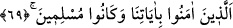
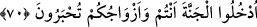
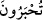
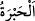
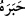

okyanusunda yelken açacaktır.
69. (Ey o) âyetlerimize inanan ve müslüman olan kullarım!
“(Ey o) âyetlerimize inanan ve müslüman olan,” kendilerini bizim tâatimize tahsis
etmiş muhlis “kullarım!”
Mukatil’den şöyle rivâyet edilmektedir: Allah Teâlâ kullarını dirilttiği zaman herkes
feryâd ü fîgan edecektir. Bir münâdî “ey kullarım” diye nidâ edecektir. Bu sefer herkes
büyük bir umutla başını kaldıracak ardından “âyetlerimize inanan ve müslüman olan
kullarım” hitâbı gelecektir. Bu sefer diğer bâtıl din mensupları başlarını eğeceklerdir.
et-Te’vilâtü’n-Necmiyye’de şöyle denmektedir: Bu insanlar, başlangıçta zâhirde
Allah’ın emir ve yasaklarına teslimiyet göstermişlerdir. Normal zamanda hakîkat
erbâbının terbiyesiyle şerîate muvâfık olarak tarîkat âdâbına teslimiyetle gönül
âlemlerini geliştirip güzelleştirmişlerdir. İşin sonunda ise mecâzî varlık âleminin
karanlığından hakîkî varlık âleminin nûruna çıkarılma husûsunda ezelî ahkâma ve ilâhî
takdirlere ve bu ahkâmın zâhir ve bâtında cereyân etmesine teslim olmuşlardır.
Âyet-i kerîmede tenzîlî ve tekvînî âyetlere ayân beyân inanmaya da işâret
edilmektedir. İslâm’ın hakîkati, îmanda ayân beyân olursa durum zâhir olur. Âyetlere
îmandan ibâret olan sıfatî îman hâsıl olunca peşinden sâlik, zâtî îman olan Allah’a
îmâna yükselir. Bu böyle bilinmelidir.
70. Siz ve eşleriniz, ağırlanmış olarak cennete giriniz!
“Siz ve eşleriniz, ağırlanmış” eseri yüzünüzde belli olacak bir şekilde ağırlanıp
sevindirilmiş yahut süs ve zînetini takınmış mutlu insanlar olarak “cennete giriniz!”
“
/tuhberûn” kelimesi güzel kıyâfet mânâsında olan “
/habret” kökünden olup
“zînetlenmiş, süslenmiş olarak” demektir.
Râgıb şöyle der: “Habr” güzel iz, alâmet ve sonuç demektir. Şu rivâyet bu
kabildendir: “Günahı sebebiyle cehenneme düşen bir Müslüman, cezâsını çekip
cehennemden çıktığında artık onun habrı ve sebri yani yüz güzelliği gitmiş olacaktır.
“Habr” aynı zamanda “âlim” mânâsına da gelmektedir. Çünkü âlimin, kendisine
uyulup örnek alınan güzel işlerinin ve ilminin eseri insanların gönüllerinde mâkes
bulmakta, ve devam etmektedir. Kamus’ta şöyle denilmiştir: Hâ harfinin esresi “hibr”
eser yahut nimetin eseri, güzellik ve simgedir. Fetha ile “habr” ise sürûr, sevinç ve
mutluluk demektir. “
/haberehu” onu sevindirdi demektir. “Na’met ve habret” ise